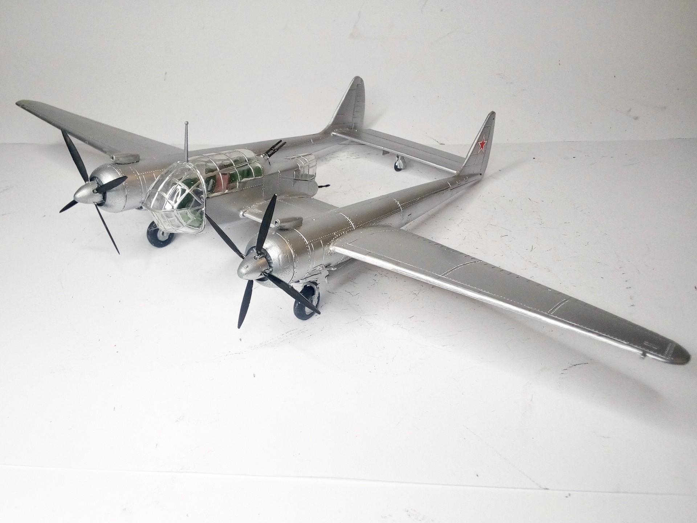
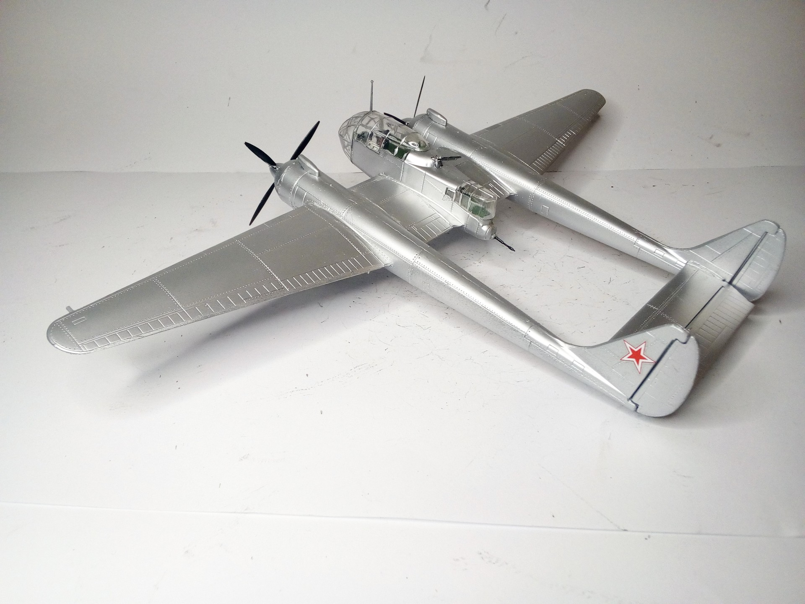

Aerei · scale model archive
Sukhoi Su 12
Sukhoi Su 12 — Kit: KOPRO, Scale: 1/72. Prototype reconnaissance plane, first flight August 1947 #1/72 #KOPRO #Su12

Photo gallery

English description
Prototype reconnaissance plane, first flight August 1947
#1/72 #KOPRO #Su12
Descrizione italiana
Prototipo di aereo da ricognizione; primo volo nell’agosto 1947.